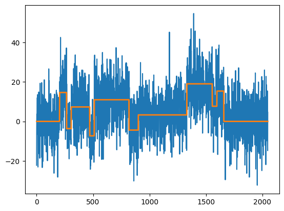

mosum.py: user guide¶
Installation¶
(.venv) $ pip install mosum
Generating data¶
We can simulate data from a mean-change model with testdata. The simulated data is stored in x, and the signal in mu.
[22]:
import mosum
sim = mosum.testData("blocks")
x = sim["x"]
from matplotlib import pyplot as plt
import pandas as pd
pd.Series(x).plot()
plt.plot(sim["mu"], '-', lw=2)
plt.show()

MOSUM procedure¶
The function mosum uses a single bandwidth to detect changes. This returns an object with plot, print, and summary methods.
[23]:
ms = mosum.mosum(x, G = 20)
ms.plot()
plt.show()

[30]:
ms.plot(display="mosum")
plt.show()

[24]:
ms.print()
change points detected with bandwidths (20,20) at alpha = 0.1 according to eta-criterion with eta = 0.4 and mosum variance estimate:
cpts G_left G_right p_value jump
0 203 20 20 0.017 1.517
1 265 20 20 0.000 1.979
2 825 20 20 0.002 1.749
3 1337 20 20 0.000 1.911
4 1555 20 20 0.001 1.807
5 1658 20 20 0.001 1.882
[25]:
ms.summary()
change points detected at alpha = 0.1 according to eta-criterion with eta = 0.4 and mosum variance estimate:
cpts G_left G_right p_value jump
0 203 20 20 0.017 1.517
1 265 20 20 0.000 1.979
2 825 20 20 0.002 1.749
3 1337 20 20 0.000 1.911
4 1555 20 20 0.001 1.807
5 1658 20 20 0.001 1.882
Multiscale MOSUM procedure with bottom-up merging¶
The function multiscale_bottomUp runs the MOSUM procedure with multiple bandwidths, merging these from smallest to largest. Again, this returns an object with plot, print, and summary methods.
[26]:
%%capture --no-display
ms_multi = mosum.multiscale_bottomUp(x, G = [10,20,40])
ms_multi.plot()
plt.show()

[27]:
ms_multi.print()
change points detected with bandwidths ([10, 20, 40],[10, 20, 40]) at alpha = 0.1 according to eta-criterion with eta = 0.4 and mosum variance estimate:
cpts G_left G_right p_value jump
0 203.0 10.0 10.0 0.065 2.017
1 264.0 10.0 10.0 0.082 1.983
2 509.0 10.0 10.0 0.068 2.009
3 1330.0 10.0 10.0 0.016 2.215
4 1555.0 10.0 10.0 0.057 2.035
5 1657.0 10.0 10.0 0.000 2.693
6 825.0 20.0 20.0 0.002 1.749
7 304.0 40.0 40.0 0.010 1.091
8 453.0 40.0 40.0 0.001 1.296
9 901.0 40.0 40.0 0.064 0.941
10 1782.0 40.0 40.0 0.072 0.931
[28]:
ms_multi.summary()
change points detected at alpha = 0.1 according to eta-criterion with eta = 0.4 and mosum variance estimate:
cpts G_left G_right p_value jump
0 203.0 10.0 10.0 0.065 2.017
1 264.0 10.0 10.0 0.082 1.983
2 509.0 10.0 10.0 0.068 2.009
3 1330.0 10.0 10.0 0.016 2.215
4 1555.0 10.0 10.0 0.057 2.035
5 1657.0 10.0 10.0 0.000 2.693
6 825.0 20.0 20.0 0.002 1.749
7 304.0 40.0 40.0 0.010 1.091
8 453.0 40.0 40.0 0.001 1.296
9 901.0 40.0 40.0 0.064 0.941
10 1782.0 40.0 40.0 0.072 0.931
3D visualisation¶
We can visualise in 3D the MOSUM detector at a range of scales, with the heights and colours of the detector corresponding to the size.
[29]:
mosum.persp3D_multiscaleMosum(x)